Asymetric Key Cryptography & Hashing
Note: the full content of this slide can be found at asym_and_hashing.html and asym_and_hashing.pdf.
Comparison between properties of Stream ciphers vs. properties of Block ciphers: 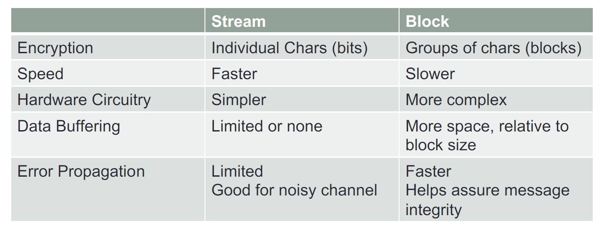
Advantages vs. Disadvantages of Stream and Block ciphers: 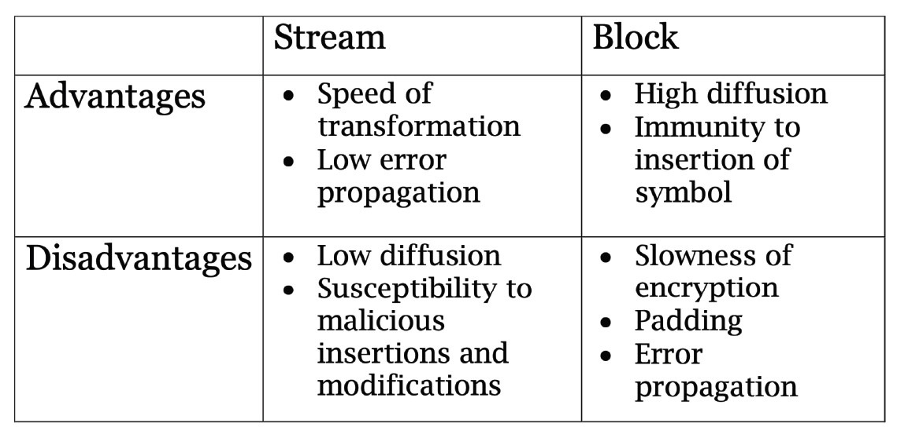
To encrypt a message/data using Asymmetric Key Cryptography, you will use the public key of the receiver. To decrypt this message, the receiver will use her or his private key. We ensure confidentiality because no one besides the receiver of the message can decrypt the message and learn what it means! 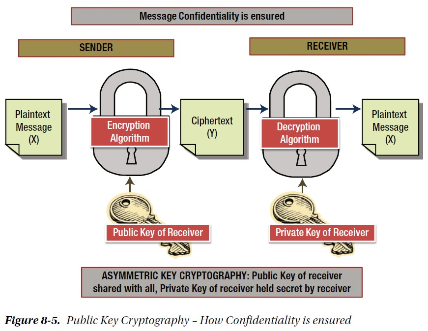
An example of using Asymmetric Key Cryptography: Alice sends an encrypted message to Bob. 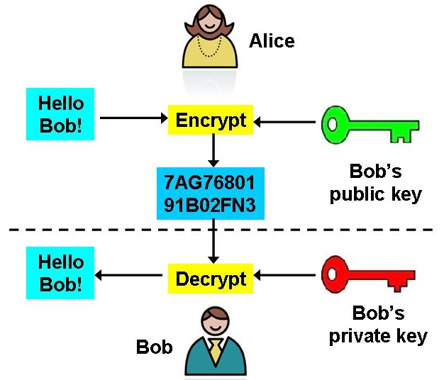
A couple more diagrams: 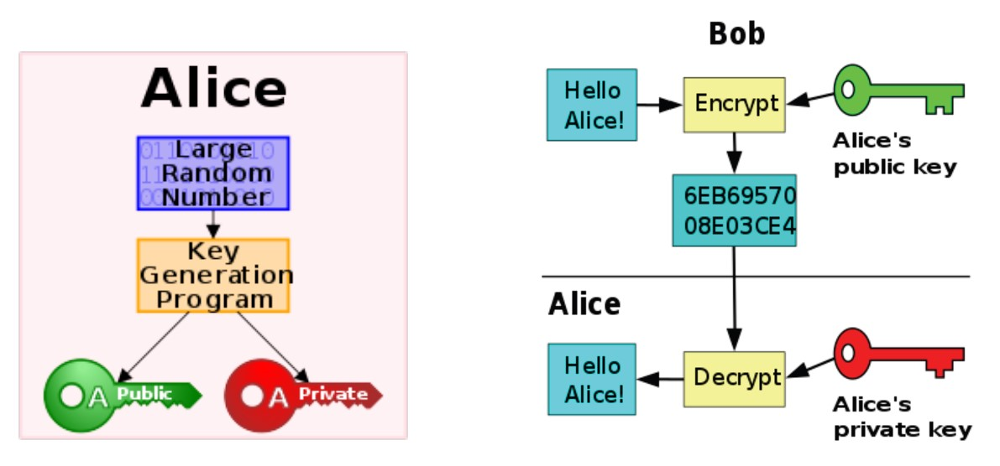
Comparison between the properties of Symmetric and Asymmetric key cryptographies: 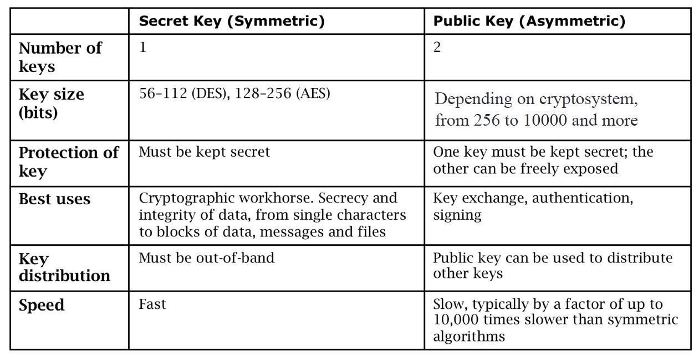
Example of the RSA encryption algorithm, which uses a public and a private key and is based on prime numbers: https://en.wikipedia.org/wiki/RSA_(cryptosystem)#Example.
Embedded Video Player: Asymmetric Encryption - Simply explained
User: n/a - Added: 10/30/17
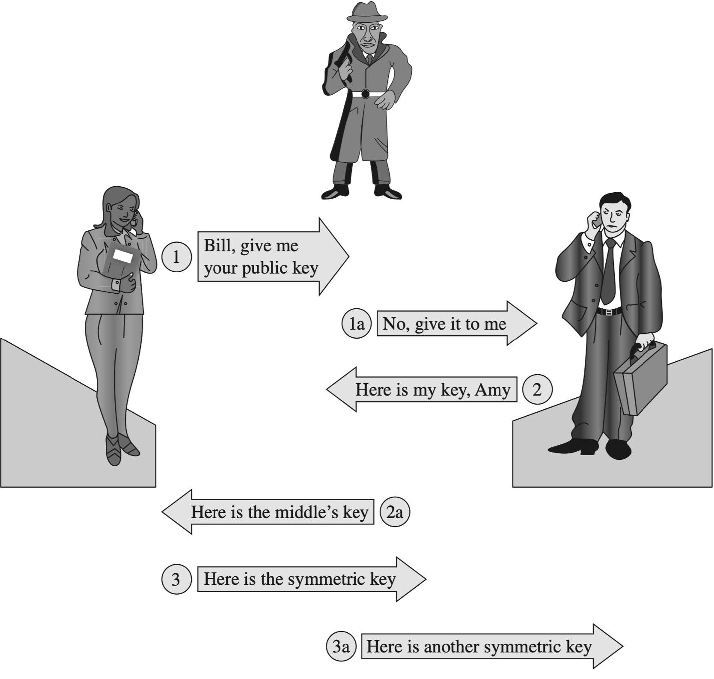
To sign a message/data using Asymmetric Key Cryptography, you will use the private key of the sender (a.k.a., your private key.) To verify that this message was sent by you, the receiver will use your public key. We ensure authenticity because no one besides you has your private key, so if a message was signed using your private key, everyone can verify that this message was sent by you! Verification can be done by anyone because your public key, which is used for the signature verification, is publically-available.
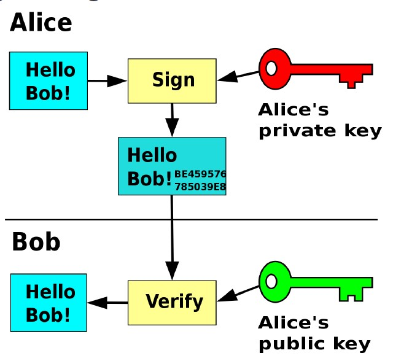
A similar diagram as the above about digital signatures: how messages and sent, and how they are verified. As we mentioned, digital signatures ensure authenticity, so the receiver can confirm that the message arrived from the real sender.
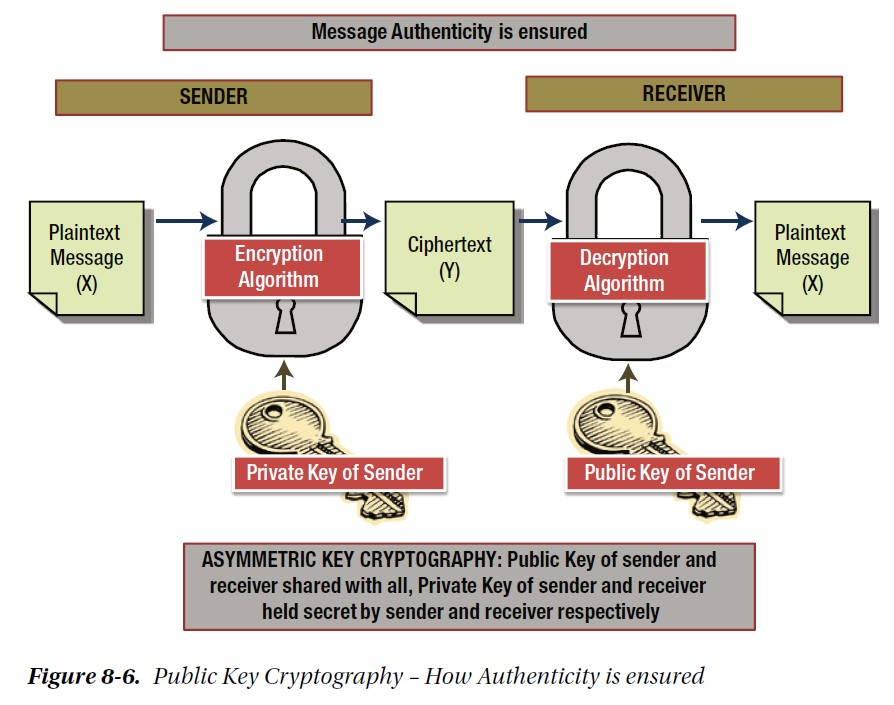
A digital signature works by hashing the document, and signing the hash value. Then, both the encrypted file and the encrypted hash (= signature) will be sent out.
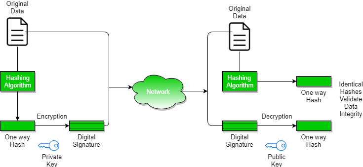
We can use encryption and digital signatures together: encryption will keep the confidentiality of the message, and the digital signature will be used to verify the sender's identity. One public/private key pair will be used for encryption and decryption, and another pair of keys will be used to sign and then verify the signature.
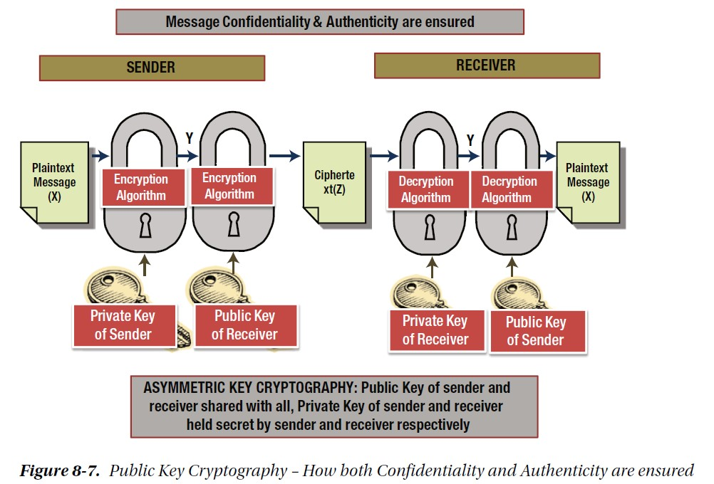
An embedded lecture notes slide on Hash functions. Taken from https://www.sci.brooklyn.cuny.edu/~briskman/cisc/3320/lecture_notes/topic_02/19.html.
On Linux, to find the hash value (= digest) of a string of data using SHA-256 (Secure Hash Algorithm), type:
echo -n data | sha256sum
where "data" above is replaced by the actual data that you want to hash, e.g.:
echo -n hello world! | sha256sum
Also, you can use online SHA-256 hash calculators, like this one: https://xorbin.com/tools/sha256-hash-calculator.
 These notes by Miriam Briskman are licensed under CC BY-NC 4.0 and based on sources.
These notes by Miriam Briskman are licensed under CC BY-NC 4.0 and based on sources.